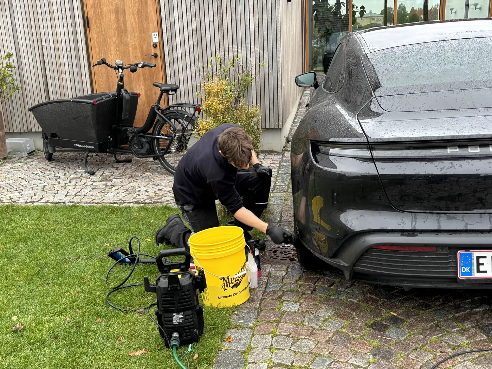
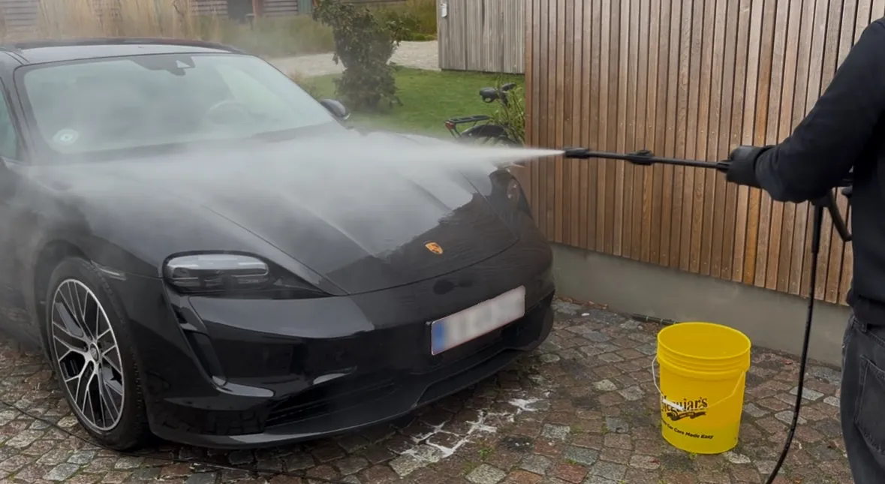
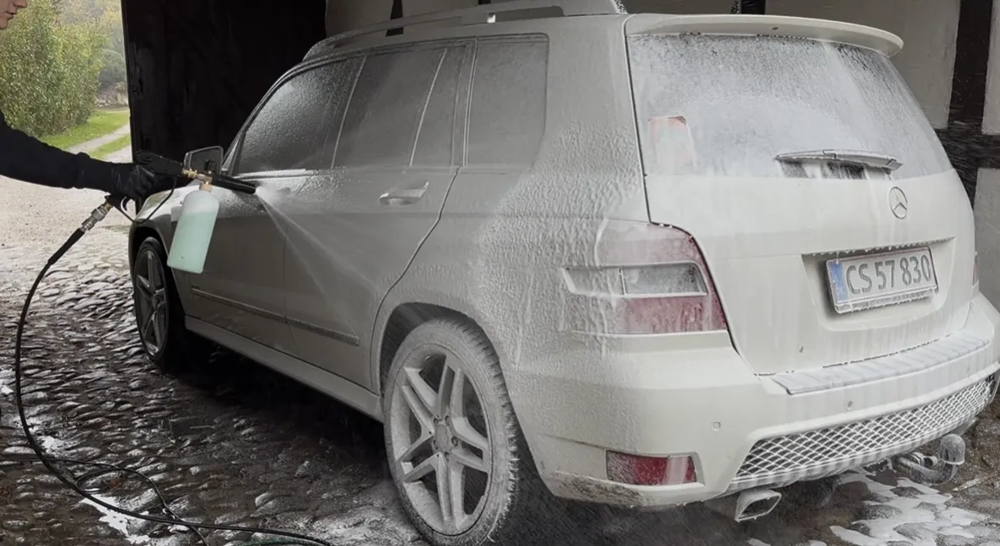

Grundig, skånsom håndvask der fjerner snavs, salt og skidt – og beskytter lakken i stedet for at ridse den, som en vaskehal kan gøre.



Hvorfor vælge os?
Vi går op i kvalitet, grundighed og kundetilfredshed. Vi hjælper bilejere i Svendborg og omegn med professionel bilpleje, der forbedrer bilens udseende og beskytter lakken på længere sigt.
En udvendig bilvask foregår i faste trin, og rækkefølgen er ikke tilfældig.
Vi begynder altid med en forvask. Den lægger sig på lakken og løsner det grove snavs, før noget som helst rører bilen. Det er det vigtigste enkelttrin i hele vasken, fordi langt de fleste ridser i en billak ikke opstår af snavset i sig selv — de opstår, når nogen tørrer hen over snavset.
Når forvasken har fået lov at arbejde, skyller vi bilen af. Først derefter går vi i gang med selve håndvasken, hvor vi bruger skånsom bilshampoo og arbejder oppefra og ned, så vi ikke trækker snavs fra de nederste paneler op over resten af lakken.
Hjul og fælge tager vi for sig. Bremsestøv sætter sig anderledes fast end almindeligt vejsnavs og kræver både andre produkter og mere tid end resten af bilen. Til sidst renser vi ruderne udvendigt og tørrer bilen af, så der ikke står kalkpletter tilbage efter vandet.
Hele behandlingen foregår hjemme hos dig i Svendborg, på Tåsinge eller Thurø. Du skal blot sørge for adgang til vand og el — resten har vi med.
En vaskehal med roterende børster arbejder hurtigt, og det er dens eneste reelle fordel. Problemet er, at børsterne slæber rundt på det snavs, de har taget af de biler, der kørte igennem før din. Over tid giver det de fine, cirkulære ridser i lakken, som bliver tydelige i direkte sollys — noget man ser tydeligst på mørke biler.
Håndvask tager længere tid og koster mere pr. gang. Til gengæld beholder lakken sin dybde, og du undgår at skulle polere ridser væk om nogle år. For en bil, du gerne vil beholde eller sælge godt, er det en billig forsikring.
Vil du have kabinen med i samme omgang, er Full Detail billigere end at booke indvendig og udvendig hver for sig.
Vi anbefaler hver anden til hver fjerde uge, men det afhænger af årstiden og af, hvor meget du kører.
Om vinteren er det vigtigere end resten af året. Vejsalt sætter sig i lakken, i fælgene og under bilen, og det angriber over tid både lak og metal. Her kan det sagtens betale sig at vaske oftere end hver fjerde uge.
Om sommeren er det insekter og fugleklatter, der er den største trussel. Fugleklatter er sure og kan ætse sig ned i klarlakken, hvis de får lov at sidde i solen i flere dage. Får du dem af hurtigt, sker der som regel ingenting.
Når saltsæsonen slutter, er en voksbehandling en billig måde at lægge et beskyttende lag på lakken frem mod sommeren.
Vi vil hellere sige det på forhånd end skuffe dig bagefter. En udvendig vask fjerner snavs — den fjerner ikke ridser, swirls eller matte partier i lakken. Det kræver polering, og det er ikke en del af pakken.
Er dine forlygter blevet matte eller gullige, er det heller ikke noget, en vask retter op på. Det er en separat behandling, hvor plastikken slibes og poleres klar igen — se polering af forlygter.
Og skal kabinen med, skal du vælge indvendig rengøring eller Full Detail. Vi siger altid til ved ankomst, hvis vi kan se, at den pakke du har bestilt, ikke løser det, du gerne vil have løst.
Udvendig bilvask starter fra 375 kr. Vi tilbyder mobil bilvask i Svendborg, Tåsinge og Thurø uden transporttillæg.
Vi anbefaler udvendig bilvask hver 2.–4. uge afhængigt af vejr, kørsel og årstid – især om vinteren, hvor salt kan skade lakken.
Ja, håndvask er mere skånsom og reducerer risikoen for vaskeridser sammenlignet med traditionel vaskehal.
Vi kører til dig i Svendborg, Tåsinge og Thurø. Foretrækker du at mødes på værksted, er det også muligt – skriv til os.
Adgang til vand og el, og en plads hvor bilen kan holde stille imens – typisk indkørslen eller carporten. Vi medbringer selv maskiner, produkter og alt andet udstyr.
Nej. En vask fjerner snavs, men ikke ridser, swirls eller matte partier – det kræver polering, som ikke indgår i pakken. Vi siger til ved ankomst, hvis vi kan se noget, vasken ikke løser.
Har du spørgsmål eller vil du booke en tid til bilrengøring? Kontakt os – vi svarer hurtigt.
Kontakt os